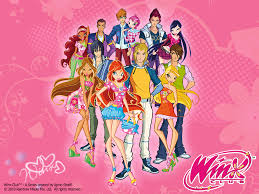
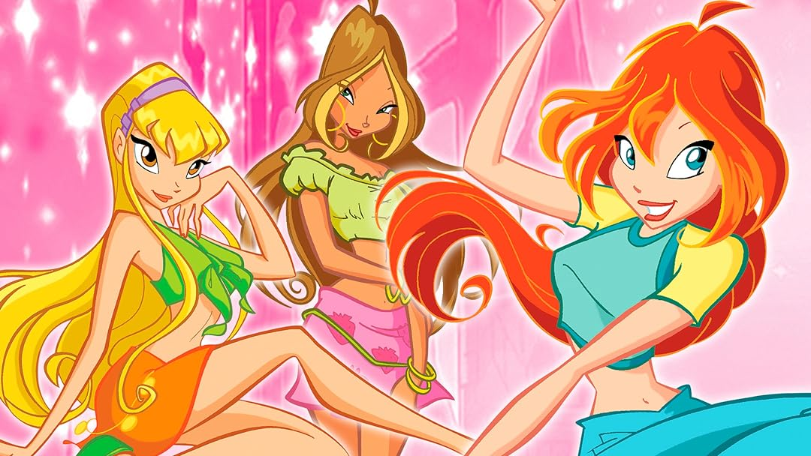

Winx Club (conocido tambíen como Club Winx en algunos países) es una serie de televisión animada, coproducida por los estudios Rainbow S.r.l. y Nickelodeon. La serie fue creada y dirigida por Iginio Straffi. La historia transcurre en el mundo mágico de Magix, poblado por hadas, brujas, monstruos y humanos, y cuenta la lucha clásica entre el bien y el mal. Las Winx van a la Escuela de Hadas y unen sus fuerzas con los Especialistas de la Escuela de Héroes para vencer a las aprendices de La Escuela de Brujas. Bloom es la líder informal del Club Winx. Sus padres adoptivos son Mike y Vanessa. Ella descubrió sus poderes mágicos latentes después de ayudar a otra hada, Stella. Fuerte y cariñosa, está siempre disponible para ayudar a sus amigos. Después de llegar a Alfea, ella descubre que sus poderes vienen del antiguo Dragón de Fuego, de la que es la séptima guardiána conocida

